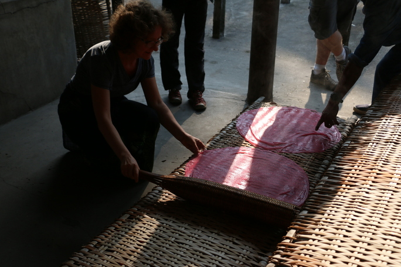
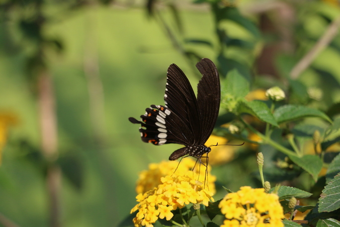
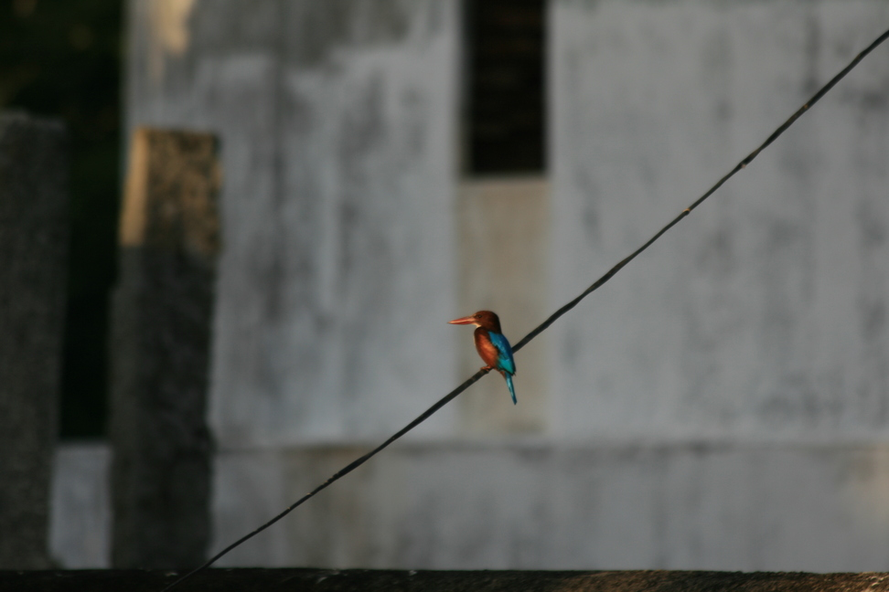
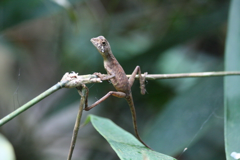

Do Wietnamu pojechałam z rodzicami i siostrą. Przygotowując się do podróży nie byłam pewna, czego mam się spodziewać na miejscu. Tłumu ludzi krzyczących na siebie, braku możliwości przejścia przez ulicę, gdyż jeżdżą tam niezliczone ilości skuterów? Z tym właśnie kojarzył mi się Wietnam. I choć po powrocie przyznaję, że wyjazd nie zmienił mojego zdania pod tym względem, to odkryłam też coś więcej – chociażby smaki, kolory i zapachy, które zapadły mi w pamięć.
Stolicą Wietnamu jest Hanoi, choć wiele Wietnamczyków uważa, że powinien nią być Sajgon, a tak właściwie Ho Chi Minh City. Skąd nazwa? Po odzyskaniu niepodległości podjęta została decyzja o zmianie nazwy i upamiętnieniu bohatera narodowego nazywanego Wujkiem Ho, dzięki któremu to się stało. Wielu Wietnamczyków nadal używa starej nazwy, która jak najbardziej jest adekwatna. Takiego ruchu nie ma nigdzie indziej. Najpopularniejszym środkiem transportu są skutery, można powiedzieć, że pełnią one rolę auta, ponieważ na jednym można zobaczyć nawet pięć osób – mężczyzn siedzi za kierownicą, za nim dwójka dzieci, a na końcu kobieta z niemowlęciem. Trzeba uważać, bo jeżdżą nawet po chodniku. Pierwsze przechodzenie przez ulicę dla większości Europejczyków będzie swoistym szokiem kulturowym. Nie należy się bać, gdy skuterki zaczną cię wymijać, tylko iść przed siebie tym samym tempem. Jeśli nie będziemy wykonywać nieprzewidywalnych ruchów – nic nam się nie stanie. Samo miasto z każdym rokiem coraz bardziej upodabnia się do innych azjatyckich metropolii. Znajdziemy tam wiele nowych hoteli i klubów. Ho Chi Minh nigdy nie idzie spać, a życie nocne kwitnie. Jest to największe w kraju miasto, które oficjalnie zamieszkuje 9 mln ludzi, jednak śmiało możemy stwierdzić, że mieszka tam do 14 mln osób.
Miasto podzielone jest na jedenaście dzielnic i każda z nich ma coś innego do zaoferowania. Jednym z ciekawszych miejsc jest katedra Notre Dame of Saigon, wybudowana z czerwonych cegieł sprowadzonych z Francji w XIX wieku. Na każdej z wież umieszczony jest ponad trzymetrowy krzyż ważący 600 kilogramów. Całkowita wysokość katedry razem z krzyżami wynosi około sześćdziesięciu i pół metra. Na placu przed katedrą początkowo znajdowała się figura francuskiego biskupa, która w XX wieku została zastąpiona przez figurę Matki Boskiej. Podobno w 2005 roku statua miała uronić kilka łez. Kościół nigdy nie potwierdził tego zdarzenia, nie zostało ono uznane jako cud. Nie powstrzymało to jednak wielu ludzi przed pielgrzymowaniem do tego miejsca.
W pobliżu znajdziemy budynek Poczty Głównej wybudowany pod koniec XIX wieku. Łudząco przypomina on europejskie dworce kolejowe. Budynek łączy w sobie wiele stylów, między innymi neoklasycystyczny i neobarokowy. Nad wejściem znajduje się wielki zegar, a pomiędzy oknami są tabliczki z nazwiskami ważnych wynalazców, w szczególności związanych z technologią i komunikacją. W środku, po obu stronach znajdziemy ogromne malowidła z XIX wieku przedstawiające dawny Sajgon oraz budki telefoniczne i kolumny z tego samego okresu. Starsze jest malowidło Wujka Ho, znajdujące się na końcu hali.

W delcie Mekongu zatrzymaliśmy się u rodziny Wietnamczyków. Była to okazja do poznania nowych osób i tamtejszej kultury. Nasi gospodarze byli uśmiechnięci i chętni do rozmowy – język nie był problemem, ponieważ oboje są nauczycielami angielskiego w szkole. Mieszkają z dwoma synami, którzy urodzili się, gdy w Wietnamie prowadzona była polityka jednego dziecka. Opowiedzieli nam, jak po narodzinach drugiego chłopca mieli rozmowy z psychologiem, ponieważ posiadanie więcej niż jednego dziecka było zabronione. A nasza gospodyni marzyła też o córce… Starszy syn pracował i studiował, młodszy powinien chodzić do szkoły, ale ze względu na problemy w nauce – przestali go tam posyłać. Hung miał 12 lat, nie mówił dużo po angielsku – wszystkiego, co umiał, nauczył się z bajek. Nie miało to jednak znaczenia, bo przyjaźnie nas co chwila zagadywał. Wieczorem gospodarz wyciągnął pianino i tańczyliśmy do muzyki na żywo. Zbliżał się Chiński Nowy Rok, więc gospodarze przygotowywali na tę okazję dekoracje. Zaproponowali, byśmy im pomogli. Byli bardzo wzruszeni, gdy się zgodziliśmy, ponieważ nigdy wcześniej żaden Europejczyk im w tym nie pomagał.
Dlaczego warto udać się w stronę delty Mekongu? W pobliżu Can Tho, największego miasta na delcie, znajduje się największy na świece targ wodny. Na łódkach na rzece porozkładane są towary. Każda łódka ma wysoki baszt z nabitymi lub przywiązanymi produktami, które na można kupić. Dzięki temu już z daleka widać, gdzie należy przybić, by kupić to, po co się przypłynęło. Sprzedaż odbywa się tylko z łódek. Upolować można przede wszystkim owoce, warzywa i ryby. Trzeba umieć się targować. Ceny dla obcokrajowców są prawie dwa razy wyższe niż dla tubylców. Dlatego wszystkie produkty dla nas kupował nasz gospodarz – wyszło dużo taniej.
Nasi gospodarze zabrali nas na targ drugiego dnia. Tuż po wschodzie słońca wypłynęliśmy na rzekę, a tam życie już kwitło. Dzień zaczęliśmy od wizyty w restauracji na jednej z barek. Trudno było nazwać to restauracją, lepiej miejscem, w którym stołują się „lokalsi”. Wszyscy przyszli na wietnamską zupę, którą jada się zawsze na śniadanie. Co znaleźliśmy w misce? Makaron, batata, marchewkę, kulkę krwi… Dla turystów obowiązkowym punktem programu jest łódź, na której można kupić lizaki ananasowe: jest to obrany ananas na patyku, którego Wietnamczycy lekko solą dla wzmocnienia smaku.
Obok targu wodnego, znajduje się targ naziemny. Można kupić tam przede wszystkim owoce morza – zaczynając od skorupiaków, poprzez ryby, a kończąc na ośmiornicach. W większości towar można oglądać jeszcze żywy, ruszający się w plastikowych miskach napełnionych wodą. Sprzedawcy zaczepiają i zachęcają do kupienia, niektórzy siedzą i patroszą ryby. Można też trafić na koguta obranego z pierza z głową, suszone żabie udka, ale też różnokolorowe owoce i warzywa, a także różnego rodzaju jadalne zioła i trawy.
W pobliżu znajduje się fabryka makaronu ryżowego. Można zobaczyć cały proces ręcznej produkcji. Najpierw kładzie się na piec, który obłożony jest łuskami ryżowymi, płynną zawiesinę z wody, mąki ryżowej, soli i czasem skrobi. Po upieczeniu jednej strony przewraca się powstały duży cienki placek na drugą stronę. Na paletach zrobionych z trzciny rozkłada się placki i suszy na słońcu, a na koniec przepuszcza się przez maszynę, która tnie je na cienkie paseczki i voilà – makaron jest gotowy do pakowania i sprzedaży. Jeśli zwiedzamy fabrykę z przewodnikiem, mamy możliwość, żeby samodzielnie wyrobić jeden z placków i upiec go na piecu. Na miejscu można też oczywiście taki makaron kupić oraz go spróbować. Makaron ryżowy spotkać możemy w wielu kolorach. Nie jest on jednak sztucznie barwiony – kolor zależy od naturalnego dodatku, takiego jak: burak czerwony, marchewka, zielenina.
Delta Mekongu to miejsce, w którym życiem jest woda, a woda to życie. Mekong jest zarówno podstawowym szlakiem komunikacyjnym, miejscem pracy, domem, spiżarnią i miejscem rozrywki. Dla mieszkańców życie przy wodzie, wokół wody i z wodą jest codziennością. Mieszkają w skromnych domach umiejscowionych na palach, by woda ich nie zalała. Kiedy żegnaliśmy się z naszymi gospodarzami, niektórzy uronili nawet łzę. Zapraszali nas, żebyśmy wrócili i na pewno jeszcze kiedyś z tego zaproszenia skorzystamy. Wietnamczycy są z reguły mili dla obcokrajowców, a jak umiesz kilka słówek po wietnamsku, to od razu stajesz się ich przyjacielem.
Największa wyspa w kraju położona jest w Zatoce Tajlandzkiej. Zamieszkuje ją około 100 tys. osób, a pewnie drugie tyle to turyści. Przyciągają ich długie piaszczyste plaże i pobliska rafa koralowa. Od jakiegoś czasu wzdłuż wybrzeża budowanych jest coraz więcej hoteli, co powoduje wzrost liczby turystów. Wyspa jest jednym z najpopularniejszych miejsc w Wietnamie.

Perła Wietnamu - Phu Quoc nazywana jest perłą Wietnamu. I nie bez powodu, ponieważ to właśnie tutaj uprawia się perły. Są to kamienie szlachetne, które znajdziemy w muszlach małży. Ich cena zależy od kształtu, koloru i wielkości. Najdroższe są okrągłe, duże, czarne. Ngoc Hien Pearl Farm znajduje się na wschodniej części wyspy. Na farmie możemy obejrzeć proces powstawania i obróbki perły. Można również zobaczyć oraz zakupić rzeźby z masy perłowej.
Wietnam znany jest z produkcji pieprzu, dlatego na Phu Quoc znajdziemy wiele jego plantacji. Khu Tuong jest największą plantacją pieprzu na wyspie. Pieprz pnie się jak winorośl (na dziko oplata drzewo). Jest wysoki na około trzy metry. Pierwsze zbiory są na koniec trzeciego roku życia rośliny, a owoce można zbierać przez około dwadzieścia lat. Jest wiele rodzajów pieprzu. Niedojrzały pieprz ma kolor zielony, jak dojrzeje, staje się czerwony. Z zielonego robiony jest pieprz czarny, a z czerwonego: czerwony i biały. Pieprz najlepiej smakuje z dodatkiem soli, można też próbować samych ziaren: czarnego, czerwonego, białego długiego, czerwonego długiego, perełek z długiego i mieszanki przypraw z pieprzem. Dodawany jest on również do dżemu z markui, mango, papai czy ananasa.
Najbardziej znanym wietnamskim przysmakiem są sajgonki – z różnym farszem (najczęściej są to grzyby i warzywa), zawinięte w papier ryżowy, obowiązkowo z sosem sojowym. To przyjemność, której będąc w Wietnamie, nie można sobie odmówić. Najlepiej wybrać miejsce, gdzie jadają miejscowi, ale zasada ta sprawdza się w każdej części świata.
Tradycyjnym daniem na śniadanie jest zupa. Znajdziemy w niej mięso, tofu, kiełbasę, jajko, pomidora, fasole, kapustę, makaron ryżowy i … bryłę krwi. Oczywiście, wszystko przyprawione szczypiorkiem, pietruszką i trawą cytrynową. Na obiad popularne są również zupy: dyniowa z kukurydzą na rosole lub z papai. Często na obiad podaje się rybę i oczywiście, obowiązkowo, miskę ryżu dla każdego. Kultura wietnamska mówi, że jedzenia podanego gościom nie może zabraknąć na stole, dlatego podawane jest prawie dwa razy tyle, ile jesteśmy w stanie zjeść. Co ważne – gdy już skończymy posiłek, należy coś zostawić na talerzu. W przeciwnym razie czeka nas dokładka. Jednym z przysmaków są ciasteczka ryżowe. Są one bardzo podobne do polskich ciasteczek biszkoptowych, ale robi się je z mąki ryżowej.
Jak to w Azji, nie sposób nie spróbować tamtejszego street foodu. Wszędzie, w większych miastach lub na dworcach, znajdziemy coś do zjedzenia. Czy to bagietkę z jajkiem, ryżowe naleśniki, smażonego banana w cieście, czy gotowaną kukurydzę. Street food stał się symbolem Wietnamu, a zapachom i kolorom nie sposób jest się oprzeć. Tradycyjnie, od wieków, w Wietnamie spożywane jest mięso psów i kotów. Według tradycji chroni to od zła i nieszczęścia. Do niedawna zabijano w tym celu ponad pięć milionów zwierząt. Obecnie ta liczba spada, a władze wprowadzają zakazy zabijania psów, jednak nadal można je spotkać wiszące na straganach.
Tradycyjna wietnamska kawa jest czarna i mocna, w małej filiżance. Razem z nią podawana jest czarka z zieloną lub jaśminową herbatą, aby przepłukać kubki smakowe. Kawę pije się z dodatkiem jajek, mleka kokosowego, mleka skondensowanego lub lodu. Kawa Ca phe sua da, czyli kawa na zimno jest bardzo popularna. W Wietnamie parzenie kawy jest rytuałem. Odbywa się ono w małym zaparzaczu, przywiezionym przez Francuzów. Jest to proces długotrwały, dlatego kiedy parzy się kawę, należy się zrelaksować i odpocząć.
Jak poruszać się po Wietnamie? Jeśli chcemy przedostać się z jednego miejsca na drugie, najlepszym wyborem są autobusy nocne lub minivany. Trzeba niestety liczyć się z tym, że nie wszystkie informacje są prawdziwe i kupując bilety na przejazd pojazdem z klimatyzacją nie znaczy, że ona działa. Podróż autobusem nocnym z rozkładanymi fotelami jest szybka i wygodna, z tej opcji korzysta wielu tubylców. W miastach natomiast można wynająć taksówkę, Ubera – wietnamskim odpowiednikiem jest Grab – lub autobus, który jest najtańszą opcją, ponieważ za niecałe dwa złote (1 dong to 0,00018 złotego) dojedziemy praktycznie wszędzie. Poszukiwacze przygód mogą wynająć skuter z kierowcą, który zawiezie ich w każde miejsce i poczeka lub poruszać się nim samodzielnie. Jeżdżenie w miastach jest jednak dużym wyzwaniem – na drodze nie panują żadne zasady. A w zasadzie jedna – kto większy ten ma pierwszeństwo.
Jadąc do Wietnamu każdy Europejczyk przeżyje duży szok kulturowy. Chaos na drodze wielu przyprawi o zawrót głowy, ale możliwość zwiedzania miast na skuterku jest nie do odpuszczenia. Wietnamczycy są otwarci na turystów i zawsze chętni do pokazania części swojej kultury, która jest kulturą bogatą. Street food i kuchnia są niepowtarzalne, warte spróbowania i zobaczenia, gdyż są wielobarwne i przyciągają wzrok. Zakupy na targu wodnym to niesamowite przeżycie. W Wietnamie każdy znajdzie coś dla siebie i to czyni go atrakcyjnym miejscem do umieszczenia na swojej liście podróży.

